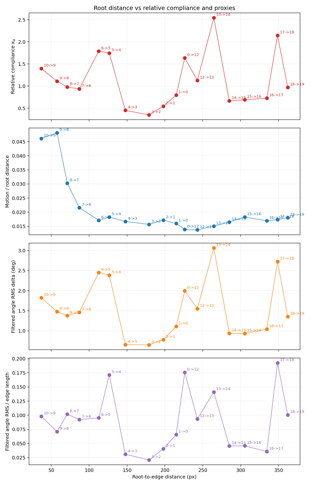
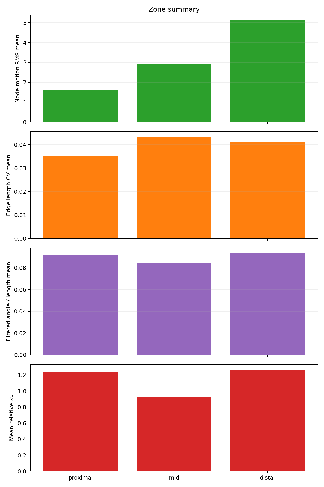

Results
Relative Compliance Map

κe projected onto the first video frame. Blue = stiff, Red = compliant. The 3–4 bends in the upper stem show the highest compliance.
Uncertainty Map

Bootstrap uncertainty Ue = (CIhi − CIlo) / κe per edge. Green = confident, Red = uncertain. Median Ue = 0.29 (29%), indicating well-constrained estimates for most edges.
Per-Edge Compliance vs. Root Distance

κe per edge as a function of root distance; error bars are 95% bootstrap CIs. Colours indicate anatomical zone: proximal (edges 0–5), mid (6–12), distal (13–19). The non-monotonic profile shows that compliance is not merely motion amplitude.
Zone Summary

Compliance distribution across proximal, mid, and distal anatomical zones. Distal edges tend to be more compliant; mid and proximal zones contain both stiff and compliant sections corresponding to bends and straight segments.
Interactive 3D Compliance Point Cloud
Interactive 3D point cloud (drag to rotate, scroll to zoom) with the compliance heatmap projected using DepthAnything V2 monocular depth estimation. Blue = stiff, Red = compliant.